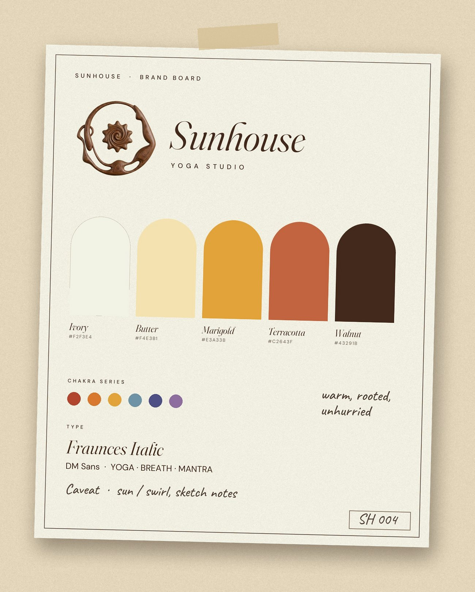
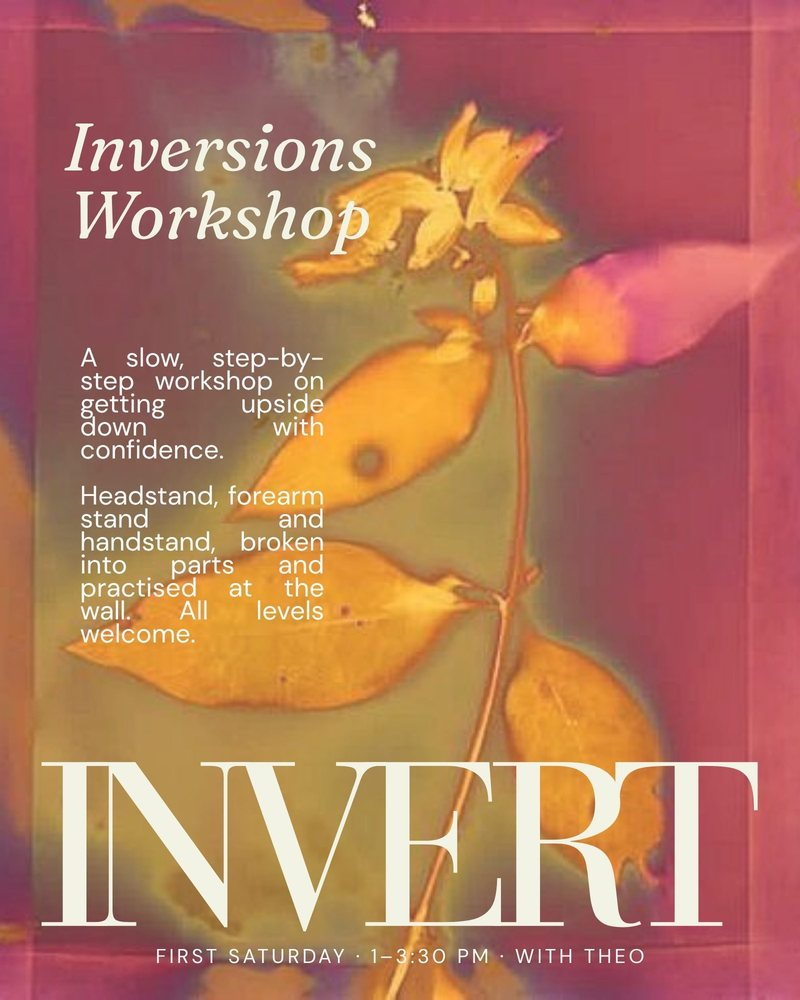
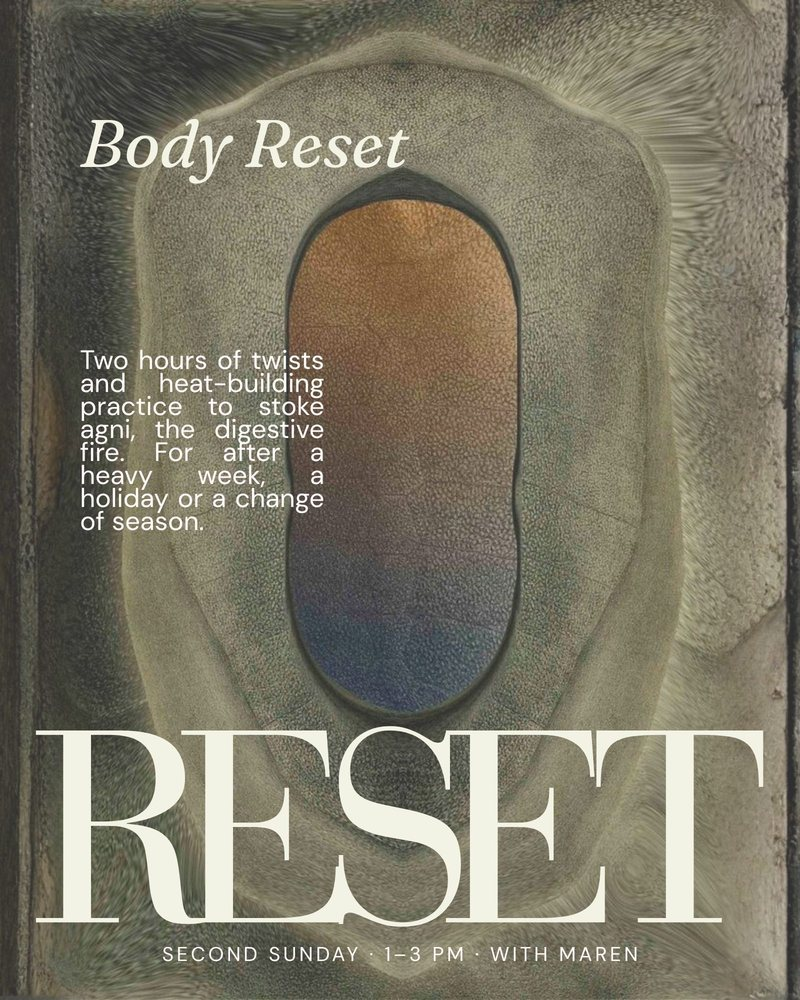
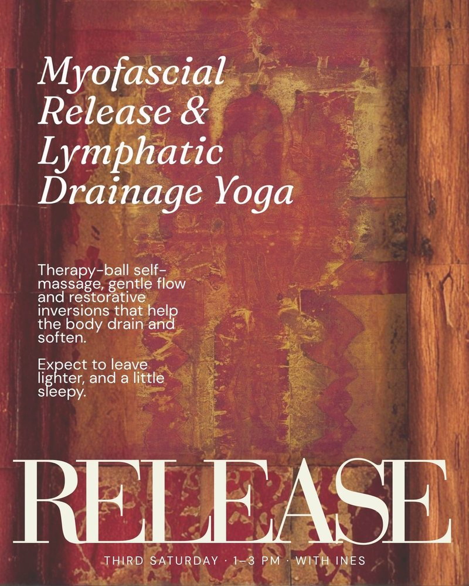
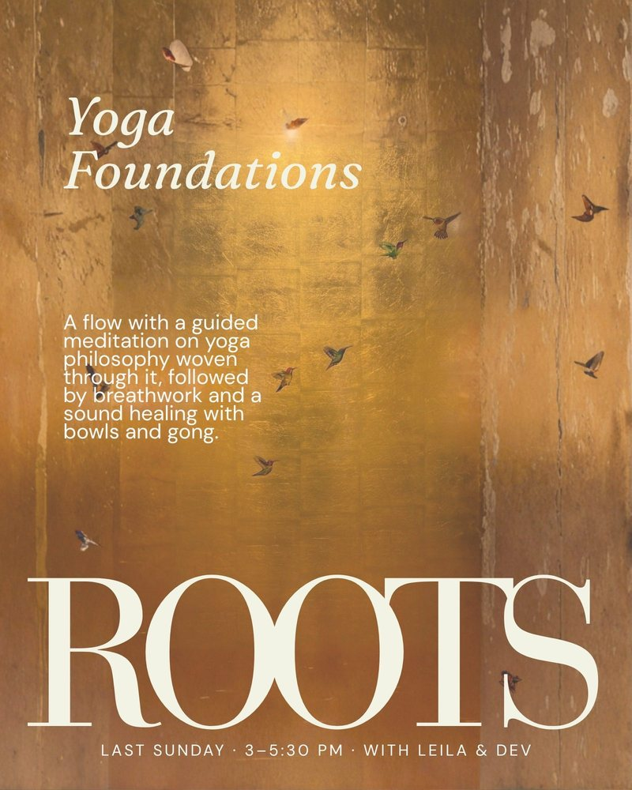
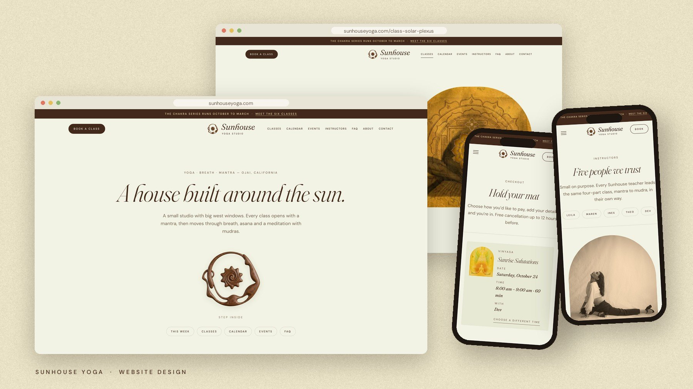

A House Built Around the Sun.
Sunhouse is a small yoga studio in Ojai built around one idea: every class has the same shape. It opens with a mantra and moves through breath, asana and a meditation with mudras, from a 6:30 am sunrise flow to a candlelit night class.
The brand had to feel as warm and grounded as the room itself: traditional practice made approachable, sunlight made into an identity. Nothing clinical, nothing neon, nothing that looked like a gym.

The mark began as a loose, airbrushed sketch: a spiral sun with soft scalloped rays. It became a figure in boat pose curving around that sun, rendered as carved walnut so it feels handmade and warm in the hand. Set beside an italic serif wordmark and a quiet, widely spaced "Yoga Studio", it reads as calm rather than corporate.
Four monthly events, each with its own editorial poster: oversized type, one word, one feeling. Invert. Reset. Release. Roots. Built as a set, so they read as a series on the studio wall and online.
Tap the posters to flip through them.




A full studio site: a this-week schedule, an October-to-March calendar coloured by chakra, a page for every class, flipping event posters, instructor profiles, and a checkout for classes, events and passes. Warm ivory, walnut and marigold throughout, with arch frames echoing the studio's doorways.
View the Site →
Logo, graphics, signage and website, built as one warm, sunlit world. Sunhouse now looks like what it is: a small room full of light, where every class has a shape.
If this is the kind of thinking your brand needs, let's talk about what that looks like for you.
Start a Project →